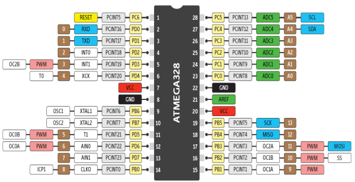
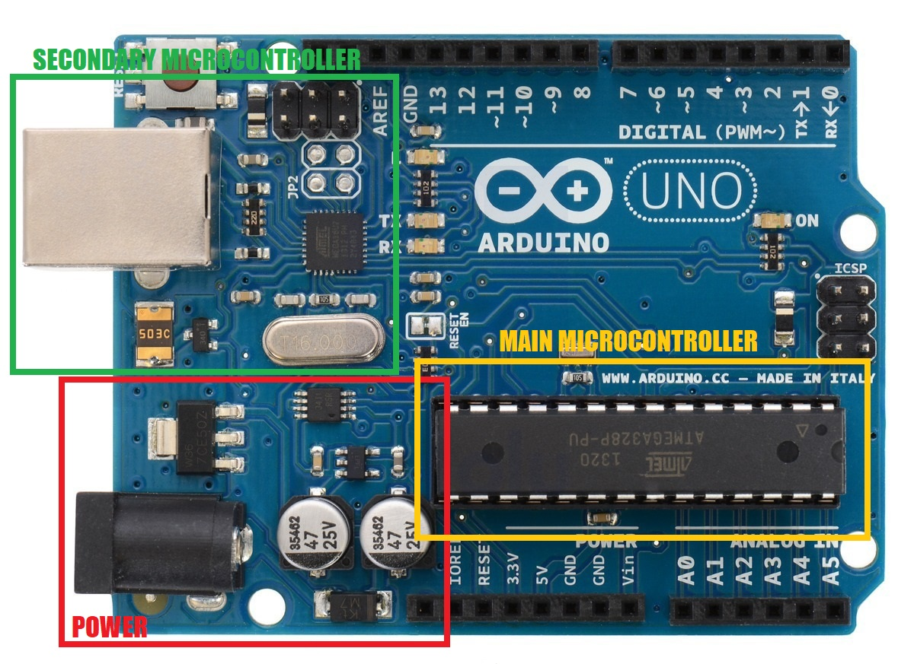
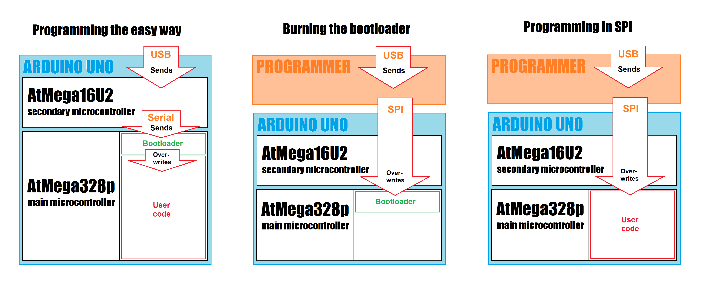

Un microcontrôleur est un circuit intégré qui rassemble les éléments essentiels d'un ordinateur (processeur, RAM, mémoire de stockage etc). Ils sont généralement utilisés dans des systèmes embarqués et se caractérisent par une faible consommation et une vitesse d'horloge relativement faible par rapport aux microprocesseurs polyvalents que l'on trouve dans nos ordinateurs personnels.
L'équivalent du célèbre "Hello world!" sur un microcontrôleur est le "Blink". Il consiste simplement à faire clignoter une LED de façon périodique. Dans cet article, nous allons réaliser ce programme sur une Arduino UNO avec les outils fournis par Arduino, puis nous affranchir progressivement de ces outils pour comprendre le fonctionnement interne de notre programme et du microcontrôleur utilisé par la carte. Cet article se veut synthétique, mais aborde beaucoup de choses. Le texte sera donc plutôt court, mais de nombreuses sources et liens d'approfondissement sont disponibles à la fin.
La Arduino UNO
La Arduino UNO est une carte de développement à microcontrôleur très populaire. Son architecture est simple et il existe un IDE gratuit qui permet de développer des programmes et de les transférer sur la carte pour qu'elle les exécute. De plus, il existe de nombreuses bibliothèques facilitant l'utilisation de la carte en elle même et des différents périphériques qui peuvent y être connectés, le tout open-source (même certains schémas électroniques sont disponibles). L'IDE propose aussi plusieurs outils comme le moniteur série qui permet de communiquer avec nos programmes par un port série.
Pour commencer, il nous faut un circuit électronique. Rien de bien compliqué, on place une LED entre le pin 5V et un pin GND de la Arduino. On ajoute aussi une résistance de ~200 Ohm en série avec la LED pour limiter le courant à moins de 20 mA (Cette valeur peut changer selon les LEDs). Si on alimente la Arduino (en USB par exemple), la LED s'allume. Mais elle ne clignote pas ! Pour ça nous allons utiliser les GPIO de la carte (General Purpose Input Output). Ce sont des pins que le microcontrôleur peut utiliser pour lire une tension ou l'écrire. On peut donc connecter la cathode de la LED au pin 2 qui est un GPIO (comme les pins 0-13 et A0-5) et demander au microcontrôleur de passer la tension à 0V ou à 5V pour allumer ou éteindre la LED.

Voici le programme que l'on va utiliser:
#define LED_PIN 2 // We use pin 2 on the Arduino to switch from 0 to 5V
// This function is executed as soon as the microcontroller gets power
void setup() {
pinMode(LED_PIN, OUTPUT); // Sets pin 2 as an output so we can control the voltage
}
// This function will be executed in a loop forever
void loop() {
digitalWrite(LED_PIN, HIGH); // Sets the voltage at pin 2 to 5V
delay(1000); // Waits for 1 second
digitalWrite(LED_PIN, LOW); // Sets the voltage at pin 2 to 0V
delay(1000); // Waits for 1 second
} Tous les programmes dans l'IDE Arduino ont deux fonctions spéciales: setup et loop. La fonction setup est appelée une fois au tout début de l'exécution, puis loop est appelée en boucle tant que la carte est sous tension. Dans la fonction setup il n'y a qu'un appel à pinMode qui sert a définir si un pin doit servir d'entrée ou de sortie. Dans notre cas c'est une sortie puisqu'on veut contrôler la tension au pin 2 (INPUT aurait permis de lire la tension au pin 2). Dans loop on a des appels à la fonction delay qui permet d'attendre un certain nombre de millisecondes, et digitalWrite qui permet de forcer un potentiel sur un pin donné (HIGH correspond à la tension d'alimentation du microcontrôleur, soit 5V).
Plus qu'à sélectionner Arduino UNO dans Tools > Board et le bon port dans Tools > Port, puis cliquer sur Upload et notre LED clignote ! C'était facile hein ? Mais en y réfléchissant un peu on ne sait pas grand chose de ce qu'on vient de faire. Tout ce que fait notre code c'est appeler des fonctions données alors qu'on peut très bien faire sans !
Comment fonctionnent les librairies arduino ?
La Arduino UNO utilise le microcontrôleur AtMega328p conçu par Atmel. Les composants électroniques ont toujours un manuel technique associé pour expliquer tout ce qu'il y a à savoir sur le composant. Notre microcontrôleur n'est pas une exception puisque Microchip a généreusement mis en ligne un manuel de 653 pages contenant tout ce dont on peut avoir besoin ! Ça peut faire un peu peur au début, mais c'est assez facile de trouver ce que l'on cherche dedans.
On va commencer par essayer de se passer de la fonction pinMode. On s'en sert uniquement
pour passer le pin 2 en mode output. En lisant la datasheet on remarque qu'il y a des
registres DDRx (Data Direction Register x), x correspondant à un port. La AtMega328p
compte 3 ports permettant l'accès à tous les GPIO. Le pin 2 est sur le port D (voir image
ci-dessous), pin PD2. Il faut donc mettre le bit 2 du registre DDRD à 1 (pour le mode écriture) et le tour est joué.
Arduino fournit des macros pour accéder aux registres facilement, on peut donc remplacer
l'appel à pinMode par DDRD |= 0b00000100
Mais on peut se passer de ces macros, il suffit de rajouter cette ligne en haut de notre
fichier:
#define DDRD (*(volatile unsigned char*) 0x2A)
0x2A est l'adresse du registre dans l'address space complet. Sur la datasheet il a
écrit 0x0A à coté, mais cette adresse correspond à l'address space des registres IO.
Le mot clé volatile empêche le compilateur d'optimiser en enlevant notre code. On écrit
à cette adresse mais on ne se ressert jamais de ce qu'on a écrit (le registre est
directement connecté au hardware qu'il contrôle) donc le compilateur pense qu'elle
ne sert à rien.

Pour remplacer la fonction delay on pourrait utiliser une approche naïve avec une boucle qui tourne pendant le temps qu'on veut. Cette solution fonctionne et n'est pas si aberrante que ça pour un microcontrôleur, mais il existe une autre approche beaucoup plus intéressante: les timers. Les timers ne sont que des compteurs qui comptent les fronts montants d'une horloge. Le AtMega328p en a 3 et ils offrent beaucoup de fonctionnalités. Un exemple d'utilisation classique est le compteur de microsecondes depuis la mise sous tension du microcontrôleur. On utilise un timer pour compter les fronts montants de l'horloge principale (16MHz) et faire en sorte qu'il incrémente une variable à chaque fois qu'il compte 16 impulsions.
Pour faire clignoter notre LED, on va donc configurer un timer pour faire quelque chose
chaque seconde. Pour ça, la première chose à faire est de set le prescaler et la source
d'horloge. Dans notre cas, on veut utiliser l'horloge principale de 16MHz, et mettre un
prescaler de 1024. Le prescaler sert à diviser la vitesse de l'horloge, ce qui veut dire
que le timer comptera à 15.625 kHz au lieu de 16 MHz.
Pour ça, on va set les 3 derniers bits du registre TCCR1B à 101 comme expliqué dans la
datasheet.
Ensuite on va configurer le compare match output. Le but de ce système est de comparer
continuellement la valeur du timer avec une valeur définie par le programme, et de faire
une action quand les valeurs sont égales. On peut configurer l'action pour qu'elle inverse
la valeur du pin OC1A qui correspond au pin 9 (voir le pinout un peu plus haut) puis
qu'elle reset le timer à 0. Pour ça il faut mettre TCCR1A à 01000000
et mettre 1 sur le bit 3 de TCCR1B. La valeur à
laquelle le compteur sera comparée va dans le registre OCR1A. On met 15625 comme ça on a
bien un match chaque seconde puisque le timer est incrémenté à 15625 Hz.
Les autres bits des registres peuvent être mis à 0 mais je vous invite à lire la datasheet
pour comprendre la fonction de chaque bit.
Voici le programme implémentant tout ça (sauf pour pinMode, j'ai du changer ce qu'on a
expliqué en haut pour utiliser le pin 9).
#define DDRB (*(volatile unsigned char*) 0x24)
#define TCCR1A (*(volatile unsigned char*) 0x80)
#define TCCR1B (*(volatile unsigned char*) 0x81)
#define OCR1A (*(volatile unsigned short*) 0x88)
void setup() {
TCCR1A = 0;
TCCR1B = 0;
TCCR1A |= 0b01000000; // Toggles PB1 on compare match
TCCR1B |= 0b00000101; // Sets the prescaler to 1024
TCCR1B |= 0b00001000; // Enables CTC
OCR1A = 15625; // Sets the compare value
DDRB |= 0b00000010; // Sets PB1 (pin 9) as an output
}
void loop() {} Cette méthode marche très bien mais elle a l'inconvénient d'être assez limitée en terme de possibilités d'actions à faire quand le timer atteint sa valeur max. Par exemple, on est obligé de mettre notre LED sur le pin 9. On va donc voir une autre méthode beaucoup plus puissante (pour garder notre LED sur le pin 2, non mais). Cette méthode utilise les interruptions. Une interruption est un mécanisme du microcontrôleur qui permet de l'interrompre et d'exécuter une autre fonction puis le laisser revenir la où il en était. On peut configurer le timer pour qu'il déclenche une interruption quand il y a un compare match. Pour cela, on va set le bit 1 à 1 dans TIMSK1 (Interrupt Mask Register). En faisant ça, dès qu'il y aura un compare match, le flag OCF1A (dans le registre TIFR1) sera set, et une interruption sera déclenchée. Il ne reste plus qu'à définir ce que doit faire l'interruption !
Pour ça, généralement on utilise une macro nommée ISR (Interrupt Service Routine) avec le
nom du vecteur d'interruption (TIMER1_COMPA_vect dans notre cas puisque c'est
l'interruption qui est appelée quand on a un compare match sur le channel A du timer 1).
Dans notre interruption, on veut inverser l'état de notre LED sur le pin 2. Pour ça, on
aurait pu utiliser digitalWrite mais c'est en fait plus facile et plus rapide en accédant
directement aux registres (environ 40 fois plus rapide selon
ce benchmark
, regardez le
code source
de digitalWrite pour comprendre.
Le pin 2 est le 3e du port D, on peut donc l'inverser en faisant PORTD ^= 0b00000100.
On se retrouve donc avec ça:
#define DDRD (*(volatile unsigned char*) 0x2A)
#define PORTD (*(volatile unsigned char*) 0x2B)
#define TCCR1A (*(volatile unsigned char*) 0x80)
#define TCCR1B (*(volatile unsigned char*) 0x81)
#define TIMSK1 (*(volatile unsigned char*) 0x6F)
#define OCR1A (*(volatile unsigned short*) 0x88)
void setup() {
TCCR1A = 0;
TCCR1B = 0;
TCCR1B |= 0b00000101; // Sets the prescaler to 1024
TCCR1B |= 0b00001000; // Enables CTC
OCR1A = 15625; // Sets the compare value
TIMSK1 |= 0b00000010; // Enables the interruption on compare match A
DDRD |= 0b00000100; // Sets PD2 (pin 2) as an output
}
// This function will be called when the interruption is triggered
ISR(TIMER1_COMPA_vect) {
PORTD ^= 0b00000100; // Toggles PD2 (pin 2)
}
void loop() {} La dernière chose venant des libs Arduino est la macro ISR. C'est assez compliqué de comprendre comment l'enlever, on va le voir dans la prochaine partie.
Pas besoin d'IDE !
Ok, maintenant que l'on comprend comment fonctionne le microcontrôleur et les libs Arduino,
on va se pencher sur la programmation. Que se passe-t-il quand on clique sur upload ?
Eh bien en fait on peut le voir !
Dans File > Preferences on peut activer "Show verbose
output" pour la compilation et l'upload (je vous conseille de toujours cocher ces options).
Maintenant, si on upload, on voit toutes les commandes que l'IDE Arduino exécute.
On remarque notamment l'utilisation de 4 outils:
- arduino-builder qui sert à préparer les fichiers source (passer d'un .ino à un .cpp)
- avr-g++ qui compile les fichiers sources en un fichier exécutable sur un processeur AVR
(la famille d'architectures dont fait partie l'AtMega328p)
- avr-objcopy qui traduit le fichier exécutable en un ficher hexadécimal au format Intel
- avrdude qui envoie le fichier hexadécimal à la carte.
Ces utilitaires sont disponibles dans le dossier d'installation de l'IDE Arduino, dans Arduino\hardware\tools\avr\bin
On va commencer par se débarrasser de cette macro ISR. Pour ça je dois avouer que je n'ai pas
trouvé de ressources sur internet, j'ai donc du expérimenter moi même. On va commencer par
lancer une vérification du programme. On voit que l'IDE compile pour vérifier que tout se
passe bien. L'appel à arduino-builder crée un fichier cpp qui est utilisé un peu plus bas
dans l'appel à avr-g++. Pour moi c'est "G:\Tmp\arduino_build_735296\sketch\BlinkWithInterruptions.ino.cpp".
On voit que Arduino.h a été rajouté en haut, en plus de quelques lignes censés
aider le compilateur à générer des messages d'erreurs si besoin. Maintenant qu'on a ce
fichier cpp on va pouvoir appeler avr-g++ avec le flag -E pour n'exécuter que le
préprocesseur donc l'expansion des macros (et le flag -I pour indiquer l'emplacement de
Arduino.h). Le fichier fait 2000 lignes à cause
d'Arduino.h, mais si on descend tout en bas on voit que la macro ISR a été étendue en
extern "C" void __vector_11 (void) __attribute__ ((signal,used, externally_visible)) ; void __vector_11 (void)
J'ai joué un peu avec cette ligne et je pense que __vector_11 est un mot réservé dans
avr-objcopy, qui place automatiquement un pointeur vers cette fonction au bon endroit
(quand l'interruption compare match est déclenchée, le microcontrôleur jump à l'adresse indiquée
en 0x0016 d'après la datasheet).
Du coup on peut remplacer notre ISR par ça:
extern "C" void __vector_11() __attribute__((signal,used,externally_visible)); void __vector_11()
C'est presque suffisant pour compiler !
Il nous reste juste une chose à faire: ajouter un main.
Quand l'IDE Arduino compile, il link avec un
main.cpp
existant qui contient un main avec les appels à setup et loop.
Dans notre cas on a pas besoin de ça, un simple main avec le contenu de setup et une
boucle infinie fera l'affaire. La boucle infinie est indispensable parce que si le
microcontrôleur sort de la fonction main, il va se mettre à exécuter des octets dans sa
mémoire qui peuvent avoir n'importe quelle valeur, mauvaise idée.
Il nous reste une dernière chose à faire pour que ça marche. Il est possible de désactiver les interruptions grâce à un bit dans le registre d’état (un registre contenant des flags important comme Z (la dernière opération a donné 0), C (la dernière opération a une retenue) etc). Cette fonctionnalité permet de faire des opérations très sensibles en terme de timing, et être sur qu'elles ne seront pas interrompues. Dans notre cas pas besoin de ça, mais elles sont désactivées par défaut donc il faut les activer (C'était fait par la fonction init qui est appelée avant setup dans le main.cpp des libs Arduino).
On se retrouve donc avec ce code:
#define DDRD (*(volatile unsigned char*) 0x2A)
#define PORTD (*(volatile unsigned char*) 0x2B)
#define TCCR1A (*(volatile unsigned char*) 0x80)
#define TCCR1B (*(volatile unsigned char*) 0x81)
#define TIMSK1 (*(volatile unsigned char*) 0x6F)
#define OCR1A (*(volatile unsigned short*) 0x88)
#define SREG (*(volatile unsigned char*) 0x5F)
int main() {
TCCR1A = 0;
TCCR1B = 0;
TCCR1B |= 0b00000101; // Sets the prescaler to 1024
TCCR1B |= 0b00001000; // Enables CTC
OCR1A = 15625; // Sets the compare value
TIMSK1 |= 0b00000010; // Enables the interruption on compare match A
DDRD |= 0b00000100; // Sets PD2 (pin 2) as an output
SREG |= 0b10000000; // Enable global interruptions
while(true);
}
// This function will be called when the interruption is triggered
extern "C" void __vector_11() __attribute__((signal,used,externally_visible));
void __vector_11() {
PORTD ^= 0b00000100; // Toggles PD2 (pin 2)
}
Qu'on peut compiler avec cette commande:
avr-g++ -DF_CPU=16000000 -mmcu=atmega328p -Os main.c -o main
F_CPU correspond la vitesse d'horloge de la cible (je ne sais pas pourquoi on doit la
spécifier)
mmcu correspond au microcontrôleur cible, indispensable pour que le compilateur sache
quelles instructions assembleur il peut utiliser.
-Os est très souvent utilisé sur les architectures avec peu de mémoire, il demande au
compilateur d'essayer de réduire au maximum l'espace memoire nécessaire pour le code.
Notez que toutes les commandes sont disponibles dans un petit script python fonctionnant un peu comme un makefile.
Maintenant on peut créer le fichier hexadécimal avec cette commande:
avr-objcopy -O ihex main main.hex
Et plus qu'a upload !
avrdude -D -v -carduino -patmega328p -PCOM6 -b115200 -Uflash:w:main.hex:i -CG:\Programmes\Arduino\hardware\tools\avr\etc\avrdude.conf
Cette commande est assez complexe mais c'est assez simple de comprendre ce qu'elle fait
en tapant avrdude --help
Pour le port, vous pouvez l'avoir soit depuis l'IDE Arduino, soit avec le gestionnaire de
périphériques dans la section "Ports (COM et LPT)". Sur linux tapez
ls /dev/ttyUSB*; ls /dev/ttyACM*
Et la LED clignote ! Ouf !
Bon, la c'est bon, on maitrise tout notre programme, on ne peut pas faire mieux ! Hmm,
pas si vite...
Pas besoin d'Arduino en fait !
J'ai dit au début que la Arduino UNO est une carte de développement, ce qui veut dire qu'elle est censé faciliter le développement d'un programme, mais pas être utilisée en production. En fait, la majorité des composants ne sont pas indispensables mais sont utiles pour développer et debugger facilement. Quand on programme la Arduino, on programme le gros microcontrôleur. Et la vous êtes censés me demander: Oui mais à quoi servent tous les autres composants alors ?
On trouve des composants de gestion d'alimentation (qui servent à alimenter la carte avec une tension entre 7 et 12V), mais surtout un 2e microcontrôleur à coté du port USB. Tiens ? Un deuxième microcontrôleur ? Pour quoi faire ? Et bien pour programmer le principal !

Le microcontrôleur principal contient un bootloader dans sa mémoire. Le bootloader est un petit programme exécuté des le démarrage du microcontrôleur. Son but est de vérifier si le microcontrôleur secondaire essaye d'initier une communication série, et de passer l'exécution au programme de l'utilisateur sinon. Si une communication est établie avec le microcontrôleur secondaire, il va s'en servir pour remplacer le programme utilisateur. Cette méthode est très pratique parce qu'elle permet de reprogrammer le microcontrôleur très facilement. Mais on a un problème de poule et d'œuf la ! Comment fait-on pour installer le bootloader quand il n'est pas encore dans la mémoire ? Eh bien on utilise une deuxième méthode de programmation qui n'a pas besoin d'avoir un programme qui s'exécute sur la cible pour fonctionner. On va se connecter en SPI (un protocole de communication très populaire) et accéder directement à la mémoire. Notez qu'on peut aussi utiliser cette méthode pour programmer le microcontrôleur, ce qui élimine le besoin d'un bootloader et fait gagner un peu d'espace (500 octets pour le bootloader Arduino par défaut).

Bon du coup on a juste besoin du microcontrôleur sur une breadboard en fait c'est ça ? Pas si vite, mais oui. Déjà il faut que le pin reset soit à 5V. Si on le laisse non connecté, il va prendre des potentiels "aléatoires" et le microcontrôleur va se réinitialiser de façon aléatoire. Sur la Arduino UNO il n'est pas connecté directement au 5V, mais il est pull-up (connecté à 5V par une grosse résistance), ce qui permet de reset le microcontrôleur en connectant reset à GND (en appuyant sur le bouton) sans créer de court circuit. Il nous faut aussi un oscillateur 16MHz et deux condensateurs céramique ~18pF pour fournir une horloge au microcontrôleur. Notez qu'on pourrait utiliser l'horloge interne 8MHz en configurant des registres spéciaux appelés fuses (high fuse et low fuse).
Ok c'est bien joli tout ça mais en pratique comment on fait pour programmer le microcontrôleur une fois sur la breadboard ? Alors déjà on peut le programmer sur la Arduino avant de le mettre sur la breadboard, mais ça manque de piquant. Si le bootloader est déjà présent, on peut utiliser une Arduino UNO qui n'a plus de microcontrôleur principal, et connecter RX, TX et RESET pour faire comme si le microcontrôleur n'avait pas été retiré. Si le bootloader n'est pas installé ou qu'on ne veut pas l'utiliser, il va nous falloir un programmeur qui est un gadget capable de communiquer avec le PC en USB et avec le microcontrôleur en SPI. Dans notre cas on peut utiliser le programmeur fourni par Atmel, ou utiliser une Arduino UNO (entière cette fois) pour fabriquer notre propre programmeur. Pour cela il suffit d'upload le programme ArduinoISP (Disponible dans les programmes d'exemple). Une fois que c'est fait, on connecte les lignes SPI en faisant attention à connecter le reset du microcontrôleur sur le chip select (pin 10 selon la configuration par défaut de ArduinoISP) de la Arduino. Ensuite on peut upload nos programmes avec l'IDE Arduino en faisant Sketch > Upload using programmer ou installer un bootloader avec Tools > Burn Bootloader (Attention il faut sélectionner Arduino as ISP dans Tools > Programmer)
Pour faire la même chose sans l'IDE Arduino les commandes sont à peu près les mêmes, il suffit de regarder les commandes éxecutées par l'IDE Arduino pour savoir quoi faire.
Conclusion
Voila, je pense que c'est suffisant pour dire qu'on sait comment fonctionne un blink :)
Comme on a pu le voir, ce n'est pas aussi simple que ce que les librairies Arduino nous font croire
Merci de votre attention !
Sources et liens d'approfondissement
Blink basique:
Tutoriel officiel
Interruptions:
Excellente vidéo de Ben Eater
Explication pratique des interruptions avec les Timers
Arduino sur une Breadboard:
Tutoriel officiel
Schema électronique de la Arduino UNO
Programmation et bootloader:
Tutoriel officiel
Fuses:
Vidéo de Mitch Davis (la série entière est très intéressante)

Gabriel Jorge
Etudiant fasciné par l'informatique, la robotique et l'astronomie
Voici un lien vers mon compte GitHub sur lequel vous pouvez trouver la majorité de mes projets:
https://github.com/KubbyDev